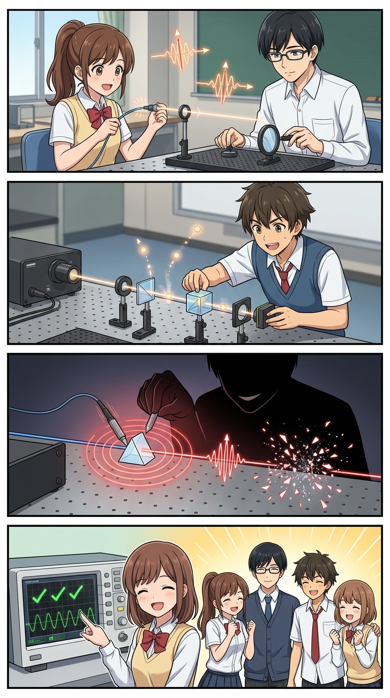
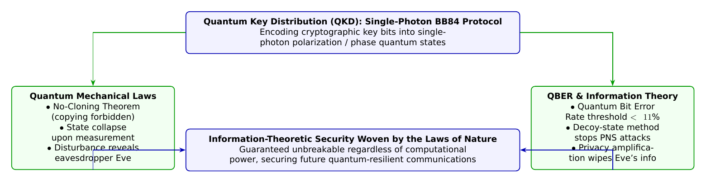

🎨 4コマ漫画挿絵（文字なし）
AI高解像度生成
▲ 【挿絵】青葉台高校 情報科学部＆帝都科学大学サイバーディフェンス・ラボでの実践シーン
💬 4コマ漫画キャラクターセリフ (Story Dialogue Script)
日・英バイリンガル (JA / EN)[蓮]「光子の偏光方向（縦・横・斜め45度）をビットの0と1に対応させて、アリスからボブへ1光子ずつ送出するんだ」
[Ren] "We map photon polarization states to bits 0 and 1, transmitting single photons one by one from Alice to Bob!"
[葵]「ってことは、途中で悪い盗聴者（イブ）が光子を盗み見しようとしたら、その瞬間に状態が壊れてバレちゃうの！？」
[Aoi] "Which means if an eavesdropper tries to intercept the photon, the measurement disturbs it and instantly exposes them!?"
[蓮]「さらに光パルスの強度をランダムに変えるデコイ状態法を使えば、光子数分割攻撃（PNS攻撃）も完全に防げるんだね！」
[Ren] "And decoy-state methods with fluctuating pulse intensities completely neutralize photon-number-splitting attacks!"
[全員]「光子の軌跡が結ぶ無条件の安全性が、未来のサイバー空間を照らし出す！」
[All] "Unconditional security woven by single photons lights the path for future cyberspace!"
📖 小説本文
冬の夕暮れ、青葉台高校の物理実験室。遮光カーテンが引かれた暗がりの中、光学ブレッドボードの上に固定された極微弱なパルスレーザーが、光ファイバーのコネクタに向かって目に見えない赤外光パルスを打ち込んでいた。
光学ベンチの端には、液体窒素で冷却された超伝導単一光子検出器（SSPD: Superconducting Nanowire Single-Photon Detector）と、ピコ秒単位の到達時刻を記録するタイム・デジタル・コンバータ（TDC）が静かに佇んでいる。
「……葵先輩、覗いてみてください」
神崎蓮がアライメント用の赤色ガイドレーザーを指差した。 「この光ファイバーの中を、1パルスあたり平均0.1個という極めて希薄な『単一光子（Single Photon）』が走っています。これが、横浜国立大学SPIRAL（落合秀樹教授、四方順司教授ら）でも深く研究されている**『量子鍵配送（QKD: Quantum Key Distribution）』**の実験系です」
「光の粒が1個ずつ……！」橘葵が息を潜めてモニターを見つめた。「普通の通信って、何億個もの光の波で『1』と『0』を送ってるんでしょ？ 1個だけの光子でどうやって暗号の鍵を送るの？」
「光子の**偏光（Polarization）**や**位相（Phase）**という量子状態にビットを乗せるんだよ」
白衣を着た城崎悠真が、偏光板のフィルターを手に取って説明を始めた。 「1984年にチャールズ・ベネット（Charles Bennett）とジル・ブラッサール（Gilles Brassard）が考案した**『BB84プロトコル』**だ。送信者アリスは、2種類の測定基底――『十文字基底（水平・垂直）』と『斜め45度基底（斜め右・斜め左）』をランダムに選び、それぞれの向きに偏光させた単一光子を受信者ボブに送る」
白石結衣がホワイトボードに量子力学のブラ・ケット記法を書き記した。 「ボブもまた、2種類の基底をランダムに選んで光子を測定します。その後、アリスとボブは公衆回線（盗聴されても構わない通常のインターネット）を使って、『どの基底で測定したか』という基底の情報だけを照合するのです。基底が一致していたビットだけを手元に残せば、2人の間には完全にランダムで一致した秘密鍵ビット列が共有されます」
「えっ、でも公衆回線でやり取りするなら、途中で盗聴者（イブ）が光子を盗み見して鍵をコピーしちゃったらどうなるの？」葵が心配そうに尋ねた。
悠真が満面の笑みを浮かべた。 「葵ちゃん、それこそが**『量子暗号が現代のいかなるスーパーコンピュータや量子コンピュータをもってしても絶対に破られない情報理論的安全性（Information-Theoretic Security）』**を誇る最大の理由なんだ」
---
📊 セキュリティ構造図解 (TikZ LuaLaTeX生成)
国家安全基準・工学図解
▲ 【技術構造図】IPAデジタルスキル標準・国際規格に準拠した仕組みのモデル化